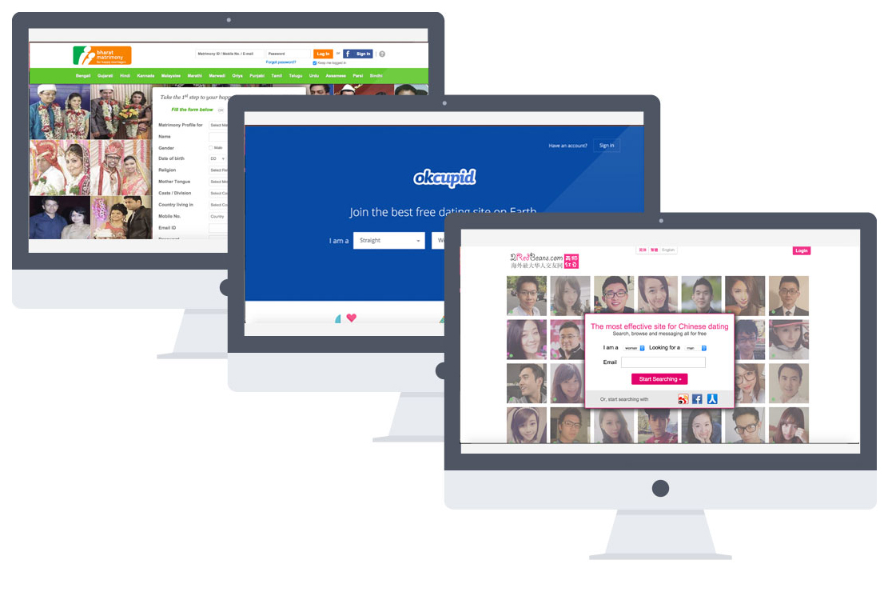
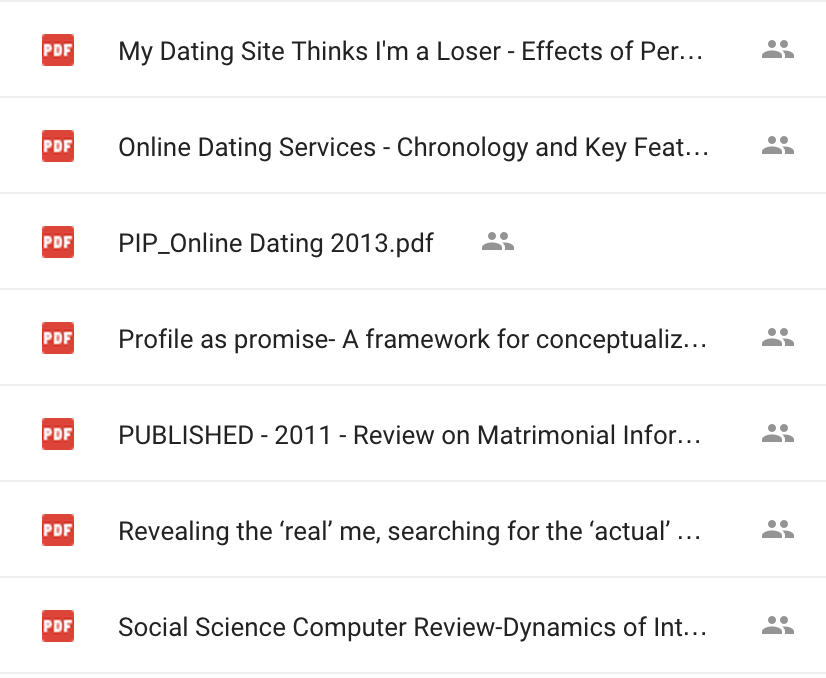
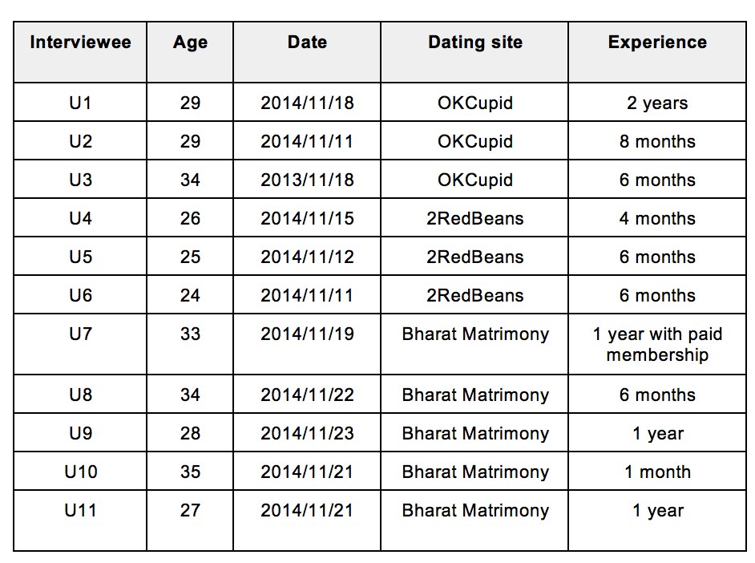
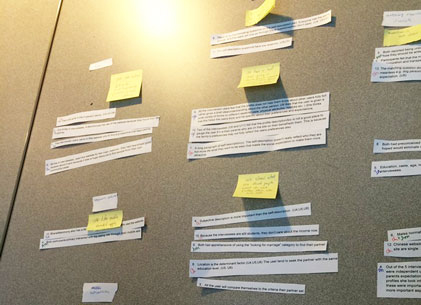
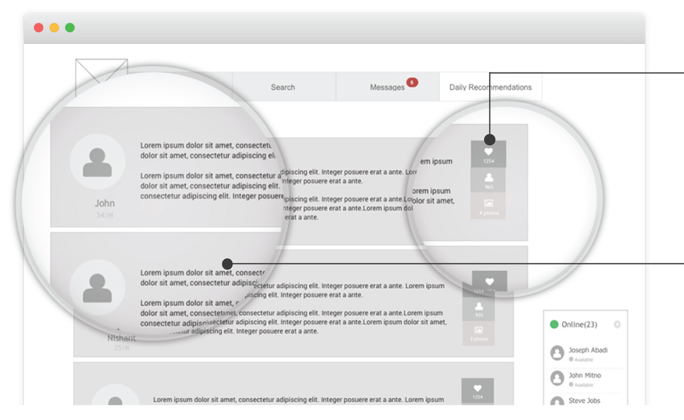
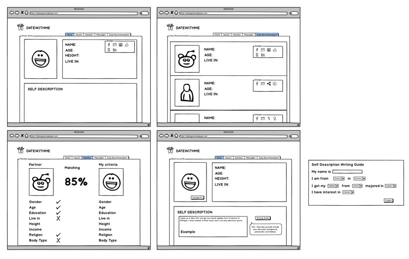
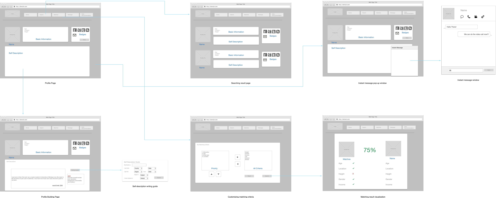

Social Interaction Design
It is known that humans are social animal and consistently seeking a companion in various forms throughout their lives. We would like to analyze the success social platforms and look at their functional designs and ways in which they serve the needs, complexities and values of various cultures. For the purpose of this study we selected three websites- OkCupid, BharatMatrimony.com and 2RedBeans.com, each representing the American, Indian and Chinese cultures respectively. We looked at various social components and interaction designs on each of these websites that perhaps contribute towards a fulfilling experience for the users on these social platforms. Besides, we also conduct requirements gathering with design suggestions in form of lo-fi prototypes.
I was the UX Designer/Researcher in this project. We completed the secondary research and conducted user studies in order to provide the recommendation of refining the current dating site. Besides, I also worked on the mockup, wireframing and user flow building and brought new interactions to the websites.
— UX Researcher
- User studies
- Social interaction design
- Web design
- Wireframing
- Prototyping
Approach

Step 1. Literature Review
We conducted a detailed literature survey by reading published papers on matrimonial site user's psychology, their cultures and social behavior in order to get more knowledge about matrimonial practices and relationship’s across different cultures.

Step 2. User Research
We conducted a pilot survey in order to understand the different kinds of users out there. The pilot survey was followed by semi structured user interviews that focussed on identifying the motivation challenges and needs of the matrimonial website users.

Step 3. Evaluations and Analysis
To identify the common and unique issues across the three different websites, we constructed an affinity wall. This significant tool helped us identify the common and diverse cultural themes that were individually collected in this initial phase.

Step 4. User insights discovery
With crucial insight from our literature survey, system analysis and user interviews, the team successfully brought out different user insights to three dating sites.

Step 5. Redesign
After discover the user’s insight, we began brainstorming design solutions and provided recommendations. Based on our findings, we created the high fidelity wireframes in order to explain our idea clearly.
Result
With the interview interpretation session, literature survey and website study, we established solid findings and redesign mockups.
